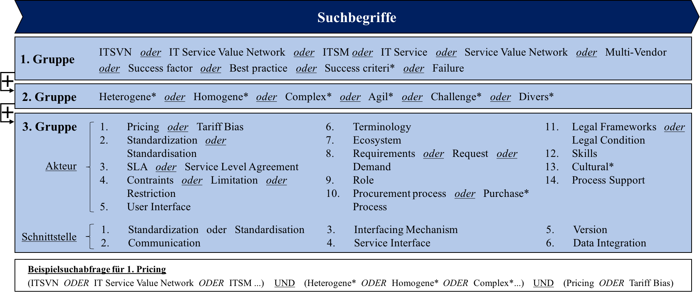
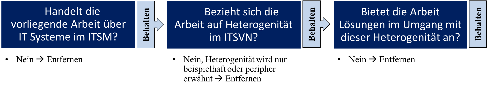
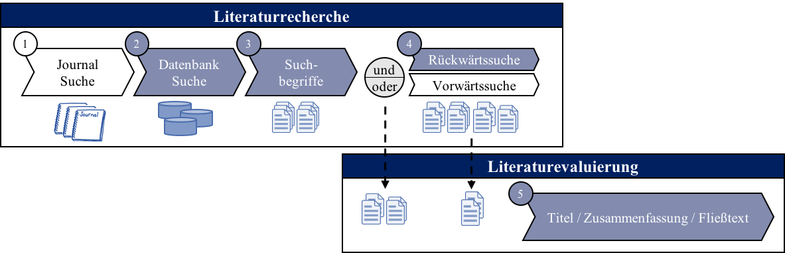

Für die Suche werden die Datenbanken Association for Information Systems Electronic Library (AiSel), Scopus sowie IEEE Xplore gewählt.
Die Suche wird in englischer Sprache durchgeführt, da die bedeutenden wissenschaftlichen Arbeiten in englischer Sprache verfasst werden.
Zur Steigerung der Suchergebnisse werden die Suchbegriffe mit Synonymen ergänzt. Bestimmte Begriffe sind mit Trunkierungen (*) verändert.
Dies ermöglicht die Aufnahme verschiedener Komposita.
Die für die Literaturanalyse verwendeten Suchbegriffe setzen sich aus drei verschiedenen Begriffsgruppen zusammen. Die Begriffsgruppen 1 und 2 bleiben unverändert.
Begriffsgruppe 3 wird je nach Attribut an die Suche angepasst.
• Die 1. Begriffsgruppe deckt die Thematik ITSVN ab.
Diese enthält die folgenden Begriffe: ITSVN, IT Service Value Network, ITSM, IT Service, Service Value Network und „Multi-Vendor“.
Zur Auswahl von Lösungsvorschlägen wurden zudem die Begriffe „Success Factor“, „Success Criteri*“ und „Failure“ mit aufgenommen.
• Die Begriffe „Heterogene*“, „Homogene*“, „Complex*“, „Agil*“, „Challenge*“, „Divers*“ sind in der 2. Begriffsgruppe enthalten.
Dies ermöglicht eine Fokussierung auf die Thematik heterogener Einflüsse.
• Die 3. Begriffsgruppe setzt sich aus den von Heininger et al. (2016) erhobenen Attributen der Elemente Akteur und Schnittstelle zusammen.
Die einzelnen Begriffsgruppen werden mit dem UND-Konnektor verbunden, die Begriffe in- nerhalb einer Begriffsgruppe mit dem ODER-Konnektor.
Eine Beispielabfrage zum Attribut „Pricing“ ist in Abbildung 13 aufgezeigt.
Die Suche wird in den Feldern Titel, Schlagwörter und Zusammenfassung durchgeführt.
Die zusammengesetzten Begriffsgruppen werden zu Suchtermen an die jeweilige Syntax der Datenbank überführt, da die Datenbanken unterschiedliche Suchabfragesprachen und Funktionalitäten unterstützen.
Eine Auflistung aller Suchterme pro Suchfeld und Datenbank ist dem Anhang B.1 bis B.3 oder dem beigefügten Tool zu entnehmen.
Für die Attribute wurden insge- samt 20 verschiedene Suchanfragen pro Datenbanken durchgeführt. Erscheinen nach Eingabe eines Suchterms mehr als 100 Treffer, werden die ersten 100 nach Erscheinungsjahr gelistet und für die Selektion ausgewertet.
Eine Rückwärtssuche auf der Basis der gewählten Texte wird im Anschluss durchgeführt.
Die generelle Eignung von Veröffentlichung wird im Zuge der Qualitätsprüfung mittels eines unabhängigen Verfahrens, dem sog. Peer Review Verfahren, beurteilt (Rowley & Slack, 2004, S. 32).
In dieser Literaturrecherche wird darauf geachtet, dass die ausgewählten Texte dieses Verfahren durchlaufen haben.
Die Selektionsmethodik der Texte wird mit Hilfe der Methode von Okoli und Schabram (2010) ausgeführt. Sie erlaubt die nach der Eingabe der Suchterme angezeigten Texte mittels Aktionskarten effizient und zügig zu selektieren.
Nur bei Erfüllung aller, in den einzelnen Aktionskarten gestellten Fragen wird ein Text ausgewählt.
Die Wahl bleibt für den Leser somit reproduzierbar und nachvollziehbar.
Drei Aktionskarten werden zur Prüfung auf Relevanz angewendet:
• Mit Hilfe der 1. Aktionskarte wird die Arbeit im Hinblick auf IT Systeme im ITSM geprüft.
• Für die 2. Aktionskarte muss das Zusammenspiel vieler Anbieter als Ursache für Heterogenität genannt werden.
• Die 3. Aktionskarte prüft, ob Lösungsvorschläge zur Bewältigung von Heterogenität in ITSVN beschrieben werden.

Werden alle drei Fragen mit ja beantwortet, wird der Text selektiert und zur weiteren Analyse verwendet.

Eine Literaturrecherche wird mit Hilfe von zuvor gewählten Suchbegriffen in Journals und Datenbanken durchgeführt.
Anhand der in den ausgewählten Texten angeführten Quellen ist die Durchführung einer Vorwärts– und Rückwärtssuche optional.
Eine fortdauernde Evaluierung der Quellen wird während des gesamten Prozesses empfohlen (vom Brocke et al., 2009, S. 8).
Die Suche sollte in Topjournals des Themengebietes (Rowley & Slack, 2004, S. 32) oder in renommierten Konferenzausgaben erfolgen (Webster & Watson, 2002, S. 16).
Aufgrund unterschiedlicher wissenschaftlicher Standards besteht jedoch die Möglichkeit, dass die Qualität der Konferenzbeiträge im Vergleich zu Topjournals geringer ausfällt.
Hier empfiehlt vom Brocke et al. (2009, S. 8) zur Verfügung gestellte Rankings heranzuziehen. Geeignete Datenbanken sollten die aus dem 1. Schritt gewählten Journals enthalten.
Die Suche sollte in den Feldern Titel und Zusammenfassung erfolgen (vom Brocke et al., 2009, S. 9).
Für systematisch durchgeführte Analyseergebnisse zu einem expliziten Forschungsgebiet sollte eine konzeptorientierte Analyse verfolgt werden.
Eine aus Autorensicht durchgeführte Analyse führe zu keinem repräsentativen Querschnitt (Webster & Watson, 2002, S. 14).
Für aussagekräftige Ergebnisse ist die Wahl der Suchbegriffe entscheidend.
Die Begriffe und die Kombinationen in den Suchtermen müssen zur Auslese relevanter Texte geeignet sein (Rowley & Slack, 2004, S. 35).
Eine optionale Vor- bzw. Rückwärtssuche ermöglicht die Aufnahme weiterer Quellen. Eine Rückwärtssuche überprüft die Referenzen, die im Text genannt werden, eine Vorwärtssuche untersucht die Texte, die auf die ausgewählten Texte Bezug nehmen (vom Brocke et al., 2009, S. 9; Webster & Watson, 2002, S. 16).